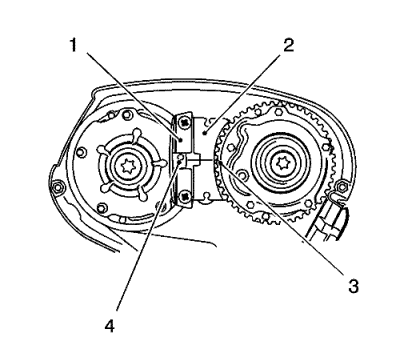
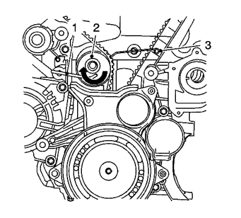
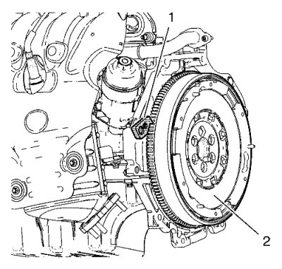
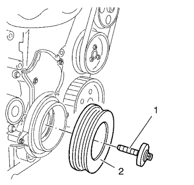
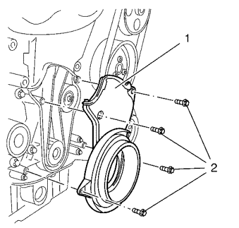
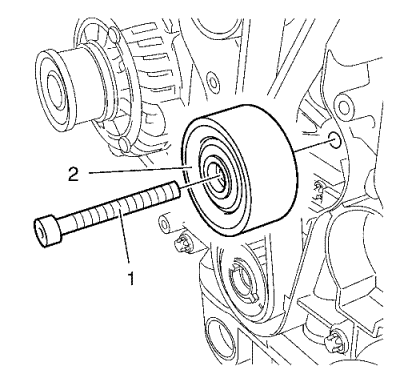
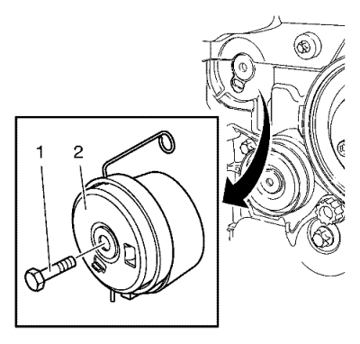
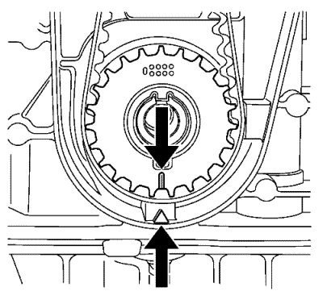

Ajuste de la correa dentada 1.6L LDE, LXV y 1.8L 2H0
Herramientas especiales
| • | EN 652 Herramienta de bloqueo del volante motor |
| • | EN 6333 Pasador de bloqueo |
| • | EN 6340 Herramienta de bloqueo |
| • | EN 6628 A Herramienta de bloqueo |
Si desea informarse sobre una herramienta regional equivalente, consultar Herramientas especiales .
Procedimiento de desmontaje
- Retire la tapa delantera superior de la correa de distribución. Consultar
Desmontaje de la cubierta delantera de la parte superior de la correa de distribución : 1.6L LDE, LXV y 1.8L 2H0 .

- Ajuste el motor al punto muerto superior (TDC).
Ajuste el compensador del cigüeñal en la dirección de giro del motor al "PMS del cilindro 1" (marca 1).
- Desmontar la tapa del árbol de levas. Consultar Desmontaje de la tapa del árbol de levas .

Nota: La mitad derecha de la herramienta de bloqueo EN 6340 se puede reconocer por el rótulo "Right", flecha, en la herramienta.
- Prepare la mitad derecha de la herramienta de bloqueo EN 6340.
| 4.1. | Desmonte la parte delantera (1) de la herramienta de bloqueo EN 6340 - derecha. |
| 4.2. | Retire los dos tornillos (2). |

Nota:
| • | La marca de punto (4) en el regulador del actuador de posición del árbol de levas de admisión no coincide con la ranura de la herramienta de bloqueo EN 6340 - izquierda (1) durante este proceso, sino que debe estar algo más arriba. |
| • | La marca de punto (3) en regulador del actuador de posición del árbol de levas de escape debe coincidir con la ranura de la herramienta de bloqueo EN 6340 - derecha (2). |
- Inserte la herramienta de bloqueo EN 6340 - izquierda (1) y la herramienta de bloqueo EN 6340 - derecha (2) en el regulador del actuador de posición del árbol de levas.

- Monte el pasador de bloqueo EN 6333 (1), aplique tensión al rodillo tensor (2) de la correa de distribución en la dirección que indica la flecha. Monte el pasador de bloqueo EN 6333 (3).
- Marque la correa de distribución en el sentido de giro.

- Monte el soporte del volante motor EN 652 (1), bloquee el volante motor (2) (o la placa flexible del cambio automático respectivamente) con la corona dentada del motor de arranque.

- Desmonte el tornillo (1) y del dámper del cigüeñal (2).

- Retire los 4 tornillos (2) de la tapa delantera inferior de la correa de distribución.
- Retire la tapa (1) delantera inferior de la correa de distribución.

- Retire el tornillo (2) de la polea loca de la correa de distribución.
- Desmonte la polea loca (1) de la correa dentada.

- Quite el tornillo del tensor (1).
- Desmonte el tensor de la correa dentada (2).

- Retire la correa dentada (1).
- Detenga el tensor de la correa de distribución.
- Retire el soporte del volante motor EN 652 (1) para desbloquear el cigüeñal.

- Gire el cigüeñal 60 grados (A) en contra del sentido de giro del motor.

- Retire los 2 tornillos (1) de cierre del regulador del actuador de posición del árbol de levas.
Nota: Se necesitan dos mecánicos.
- Afloje los tornillos del regulador del actuador de posición del árbol de levas (2).
Sujete en el hexágono adecuado del árbol de levas.
- Desmonte los tornillos del regulador del actuador de posición del árbol de levas (2) y el regulador del actuador de posición del árbol de levas (3).

- Alinee horizontalmente los árboles de levas por el hexágono (flechas) hasta que se pueda insertar la herramienta de bloqueo EN 6628 A en ambos árboles de levas.

- Inserte la herramienta de bloqueo EN 6628 A (1) en los árboles de levas.
Procedimiento de montaje
Nota: No apriete los tornillos del regulador del árbol de levas.
- Monte el regulador del actuador de posición del árbol de levas (3).
- Monte los tornillos del regulador del actuador de posición del árbol de levas (2).
Precaución:Consulte Precaución con las fijaciones en la sección Prólogo.
Nota: Se necesitan dos mecánicos.
- Apriete los tornillos (2) del actuador de posición del regulador del árbol de levas en tres pasos:
Sujete en el hexágono adecuado del árbol de levas.
| 3.1. | Primer paso, apriételos a 65 N·m (48 lib. pie) |
- Sustituya los anillos de junta del regulador del actuador de posición del árbol de levas.
- Monte los 2 tapones del regulador del actuador de posición del árbol de levas (1) y apriételos a 30 N·m (22 lib. pie).
- Desmonte la herramienta de bloqueo EN 6628 A.
- Limpie la rosca del dispositivo tensor de la correa de distribución.
- Monte el tensor de la correa de distribución (1) y apriete el NUEVO tornillo (2) del tensor de la correa de distribución a 20 N·m (15 lib. pie).
- Limpiar la rosca de la polea loca de la correa de distribución.
- Monte la polea loca de la correa de distribución (2) y apriete el NUEVO tornillo (1) a 25 N·m (18 lib. pie).

Nota: El piñón de la correa de distribución y la carcasa de la bomba de aceite deben estar alineados.
- Ponga el motor en punto muerto superior (PMS)
Gire el cigüeñal en el sentido de giro del motor mediante el tornillo del dámper del cigüeñal, hasta el PMS de la carrera de combustión del cilindro 1.
- Monte el soporte del volante motor EN 652 (1), bloquee el volante motor (2) (o la placa flexible del cambio automático respectivamente) con la corona dentada del motor de arranque.
Nota: Observe la dirección de giro.
- Introduzca la correa dentada (1).
- Gire el rodillo tensor de la correa dentada a la derecha para aplicar tensión inicial.
- Desmonte el pasador de bloqueo EN 6333.
- Libere la tensión del dispositivo tensor de la correa dentada.
- Monte la tapa delantera inferior de la correa de distribución (1) y apriete los 4 tornillos (2) a 6 N·m (53 lib. pulg.).
- Monte el dámper del cigüeñal (2) y el tornillo NUEVO (1), y apriételo con 3 aprietes:
| 18.1. | Primer paso a 95 N·m (70 lib. pie) |
- Retire el soporte del volante motor EN 652 (1) para desbloquear el cigüeñal.
- Desmonte la herramienta de bloqueo EN 6340.
- Compruebe la posición del actuador de posición del regulador del árbol de levas.
| 21.1. | Gire el cigüeñal 720° en el sentido de giro del motor mediante el tornillo del dámper del cigüeñal. |
| | Nota: Observe la marca del regulador del actuador de posición del árbol de levas. |
| 21.2. | Inserte la herramienta de bloqueo EN 6340 en los engranajes de la distribución de los árboles de levas. |
- Inserte la herramienta de bloqueo EN 6628 A (1) en los árboles de levas.
Alinee los árboles de levas por el hexágono hasta que se pueda insertar la herramienta de bloqueo EN 6628 A en ambos árboles de levas.
- Compruebe la posición del cigüeñal.
La marca en el dámper del cigüeñal debe estar alineada con la marca de la tapa inferior de la correa de distribución, consulte la marca (1).
- Desmonte la herramienta de bloqueo EN 6628 A.
- Monte la tapa del árbol de levas. Consultar Montaje de la tapa de los árboles de levas .
- Monte la tapa delantera superior de la correa de distribución. Consultar
Montaje de la cubierta delantera de la parte superior de la correa de distribución : 1.6L LDE, LXV y 1.8L 2H0 .
| © Copyright Chevrolet. Reservados todos los derechos |